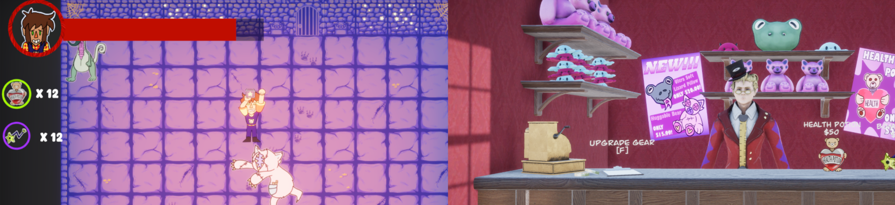
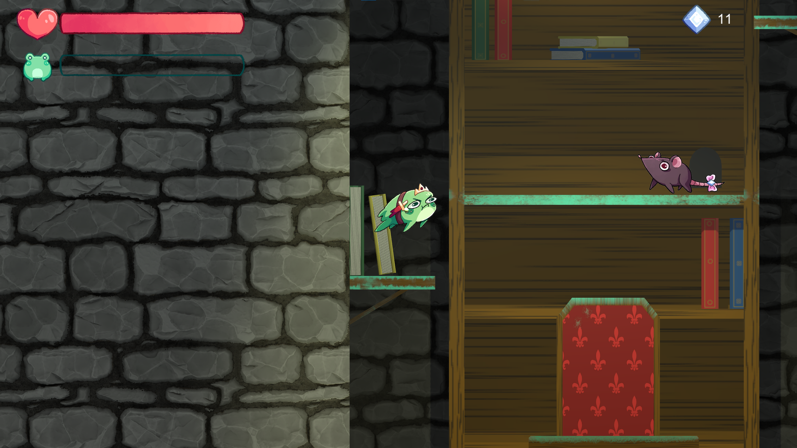
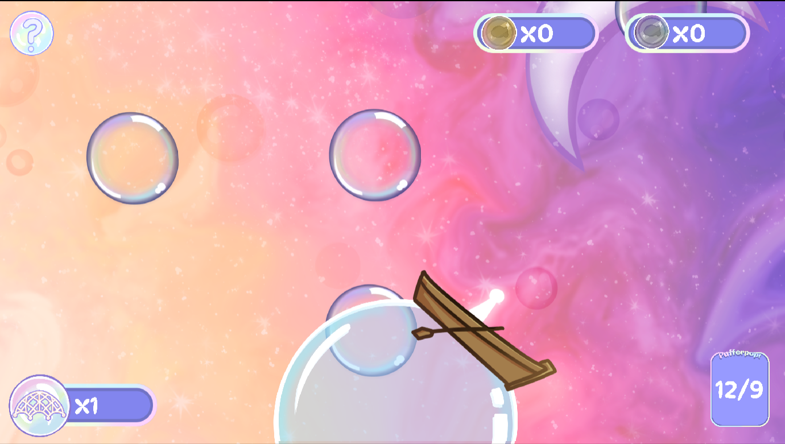
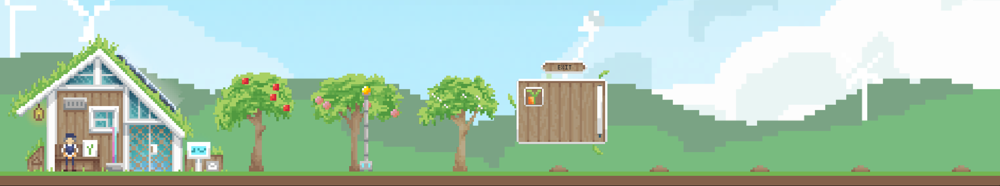

“Conquer the skies in between dimensions with your friend in this co-op, first person, airship RPG/Roguelike. Guided by your Wayfarers Crystal, fend off horrifying eldritch creatures with a mix of fancy flying and your arcane ballista while trying to get your cargo to the exit portal located somewhere in the mist…”
Wayfarer’s Guild is a first-person airship adventure game, developed as my final group project at Falmouth University. Players take on the role of a Wayfarer tasked with delivering cargo using portals that takes them through extra-dimensional spaces, while navigating complex terrain and avoiding hostile enemies.
Development Context:
When development first started it was in a game jam format, as the lecturers wanted us to demonstrate that we could get a rough prototype done as a proof of concept before moving forwards. I worked in a team of 5 artists, 1 writer, and 3 other programmers. I took charge of getting a rough version of the networking done, which I achieved over the first week of the project starting. From there, the project evolved over the course of the academic year into a fully-fledged multiplayer experience.
Key Contributions:
Networking: Implemented initial networked prototype using Unity Netcode for GameObjects
Core Gameplay Features:
Worked on character controller and ship movement/control mechanics
Implemented item interaction/pickup system
Prototyped and implemented ballista weapon system
Audio Implementation: Worked on sound effect implementation and triggering based on gameplay events
Cross discipline collaboration: Worked closely with artists to integrate their work into engine
Skills developed:
Networking logic programming (Unity Netcode for game objects)
Unity proficiency
C#
Teamworking
Bug fixing
Feature implementation
Problem solving
Continuous integration and version control using GitHub
Reap What You Sew - Unity

“Fight your way through a nightmare toy dimension, collecting the remains of evil creatures to sell to the unsuspecting masses as cute plushies. Keep those sales rolling and do your boss proud!”
Reap what you sew was the 2nd year group project that I made at Falmouth university, the player is a newly hired janitor to a bustling toy store whose job description did not mention the part where the owner would task them with going through a portal under the shop and fighting nightmarish creatures that turn into cute plushies upon death to be sold to people in the shop. The game is a dungeon crawler roguelite where you must defeat enemies, the shop owner sells them and gives you part of the profits which you can use to upgrade your gear and buy items, growing stronger each run.
I worked in a team of 4 artists a designer and one other programmer, as we were a smaller team I took on a large amount of tasks throughout development. Ranging from core gameplay features, to audio and animation implementation.
Character controller: Implemented responsive player movement and input handling
Audio and animation Integration: Hooked up character animation and sound effects using Unity’s systems
Enemy logic and attacks: Developed enemy AI logic as well as effects and animations
Persistent inventory system: Programmed a system utilizing don’t destroy on load to maintain currency, items and upgrades across runs
Combat system: Worked on creating a satisfying 2D melee combat system
Skills Developed:
Unity workflow
GitHub and merge conflict resolution experience
Close collaboration with other disciplines to help implement their work
Ribbit Romance Volume VII - Unity

“Once upon a time, in a land not so far away, a prince wanders into a tower in search of a princess only to find himself cursed. Turned into a frog and desperate for a true love’s kiss, his current tactic, accuracy by volume of fire, kissing anything that consents.”
Ribbit romance Volume VII was a game completed for the 2024 global game jam over a period of two days, which had the theme “make me laugh”, it is a platformer cross dating sim. You play as Prince Bodacious, who is tasked with rescuing the princess from a tower, however, you have been turned into a frog by the jealous witch. You must proceed through each level meeting various characters that you must romance, with the hopes that a kiss will turn you back into a human.
For this project I worked in a team of 5 artists, 1 writer, and 2 other programmers. I worked on a variety of features mainly including enemies and animation implementation
Animation implementation: Collaborated with one of the artists to implement the frog and rat sprites and animations
Enemy logic: Worked on enemy movement and damage logic
Scene-persistent gem tracker: Used don’t destroy on load to track currency through scenes
UI implementation: Worked on various menus and UI elements
Working to a tight schedule due to only having 2 days for the project
Bubble Fish - Godot

“Enjoy a relaxing and cosy adventure in endless space catching bubbles and using the Pufferpop to see what exciting rewards you have gathered on your calming journey.”
Bubble Fish was a game completed for the 2025 global game jam over a period of two days, which had the theme “bubble”. It is a relaxing mobile/browser game where you catch bubbles with nets as they float past, each one contains a fish that you can record in your compendium.
For this project I worked in a team of 4 artists, 1 sound designer, and 1 other programmer. I mainly worked on the bubble floating mechanic as well as the compendium.
Bubble spawning: Instantiated bubble prefabs over time
Bubble floating: Implemented logic to control bubble movement
Compendium: Implemented compendium mechanic
UI implementation: Worked on various UI elements
Godot
GDScript
Orchard’s Orchard - Unity

“Create your very own orchard by growing trees, selling fruit and filling in your compendium in Orchard’s Orchard a relaxing 2D pixel farming sim!”
Orchard’s Orchard was a game completed for the 2025 Healthy Gamer game jam over a period of a month. You play as Morgan, a retiring engineer who buys some land overlooking the valleys and decides to build his dream orchard and quaint home. Gameplay consists of growing trees, selling their fruit and buying more and better trees you’ll need to buy saplings from the shop and plant them in available spots. The trees will gradually grow, and fruit will follow. You can sell your fruit in the sell tab of the shop. While growing the fruit, some may appear different from the rest on the tree, these can be logged in your fruit collector’s compendium.
For this project I worked in a team of 2, I handled all the programming and an artist handled all of the art, we worked together throughout the design process.
All programming was handled by myself
Tree and fruit growth: IEnumerator timers handle growth and sprite stages
Inventory management: Harvested fruit goes to scroll container drag to shop window to sell
Interactables: Interactable and highlighting system based on mouse hover
Audio: Audio slider for controlling music volume
Shop system: Can sell fruit for money and buy saplings
Save and load system: Money and audio settings saved between sessions